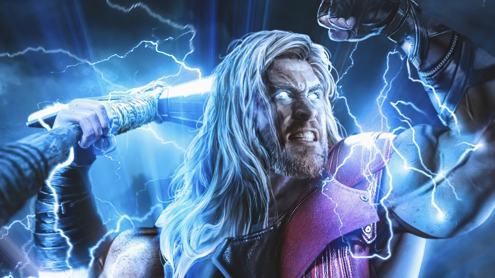

Человек-паук

Челове́к-пау́к (англ. Spider-Man), настоящее имя Пи́тер Па́ркер (англ. Peter Parker) — супергерой, появляющийся в комиксах издательства Marvel Comics, созданный Стэном Ли и Стивом Дитко. С момента своего первого появления на страницах комикса Amazing Fantasy № 15 (рус. Удивительная фантазия, август 1962) он стал одним из самых популярных супергероев. Ли и Дитко задумывали персонажа как подростка-сироту, воспитанного дядей и тётей, совмещающего жизнь обычного студента и борца с преступностью. Человек-паук получил суперсилу, увеличенную ловкость, «паучье чутьё», а также способность держаться на отвесных поверхностях и выпускать паутину из рук с использованием прибора собственного изобретения.
Железный человек
Желе́зный челове́к (англ. Iron Man); настоящее имя — Э́нтони Э́двард «То́ни» Старк (англ. Anthony Edward "Tony" Stark) — персонаж изданий Marvel Comics и их адаптаций, созданный писателем Стэном Ли, сценаристом Ларри Либером и художниками Доном Хекомruen и Джеком Кёрби; первое появление Железного человека состоялось в комиксе Tales of Suspense #39 в марте 1963 года.
Доктор Стрэндж
Доктор Стивен Винсент Стрэндж (англ. Dr. Stephen Vincent Strange), более известный как Доктор Стрэндж (англ. Doctor Strange) — супергерой, появляющийся в американских комиксах издательства Marvel Comics. Доктор Стрэндж исполняет обязанности Верховного мага Земли и является главным защитником Земли от магических и мистических угроз. На основе историй о чёрной магии и аудиосериале «Чанду волшебник», Стрэндж был создан во время Серебряного века комиксов, с целью раскрытия в Marvel Comics темы магии и введения новых персонажей. Созданный художником Стивом Дитко и сценаристом Стэном Ли, персонаж дебютировал в Strange Tales #110 в июле 1963 года.
Капитан Америка
Капитан Аме́рика (англ. Captain America), настоящее имя — Сти́вен Ро́джерс (англ. Steven Rogers) — супергерой комиксов издательства Marvel Comics. Один из самых известных персонажей в мире комиксов. Он был создан писателем Джо Саймоном и художником Джеком Кирби и впервые появился в комиксах 1940-х «Timely Comics». За годы в общей сложности в 75 странах было продано около 210 миллионов копий комиксов «Captain America» (оценки разнятся, в некоторых источниках эта цифра немного больше или меньше).
Тор
Тор (англ. Thor); иногда именуемый как Могучий Тор (англ. Mighty Thor) — супергерой комиксов издательства Marvel Comics. Персонаж основан на образе одноимённого бога - громовержца из германо-скандинавской мифологии. Его авторы в Marvel — редактор Стэн Ли, сценарист Ларри Либер и художник Джек Кирби, а первое появление приходится на комикс Journey into Mystery #83 (1962), который позже сменил название на «The Mighty Thor».